ITESO
MODELOS DE CRÉDITO
RODOLFO SLAY RAMOS
IVANNA HERRERA IBARRA 744614
ANA SOFÍA HINOJOSA BALE 742594
LUIS FERNANDO MÁRQUEZ BAÑUELOS 744489
08 DE MARZO DE 2026
Contexto del riesgo de crédito, problemática del modelo y objetivos del proyecto.
El otorgamiento de crédito constituye uno de los pilares fundamentales del sistema financiero moderno, ya que permite canalizar recursos hacia el consumo, la inversión y el crecimiento económico. Sin embargo, toda operación crediticia implica la exposición a riesgo de incumplimiento, lo que puede generar pérdidas significativas para las instituciones financieras si no se gestiona adecuadamente.
Tradicionalmente, la evaluación crediticia se ha apoyado en modelos clásicos de scoring, como el modelo FICO y el análisis de las 5 C's del crédito. Si bien estos modelos han demostrado ser útiles por su simplicidad e interpretabilidad, presentan limitaciones para capturar relaciones no lineales y patrones complejos presentes en grandes volúmenes de datos.
Ante este escenario, surge la necesidad de combinar enfoques clásicos y técnicas de machine learning, buscando un equilibrio entre capacidad predictiva, interpretabilidad y solidez metodológica.
El riesgo de crédito se ha convertido en una de las principales fuentes de vulnerabilidad para bancos y entidades financieras, especialmente en contextos de alta incertidumbre macroeconómica. Una evaluación inadecuada del perfil de riesgo de los solicitantes puede traducirse en:
Aumentos en la morosidad.
Deterioro de la cartera crediticia.
Presión sobre la estabilidad del sistema financiero.
El objetivo principal es desarrollar un modelo de clasificación para predecir la calidad crediticia de los individuos, categorizándolos en Poor, Standard y Good Credit Score, a partir de información demográfica y financiera.
Para lograrlo, se propone
Implementar un modelo base de regresión logística como benchmark.
Aplicar técnicas de machine learning para la selección de variables relevantes.
Evaluar el desempeño utilizando métricas adecuadas para problemas con desequilibrio de clases.
Comparar el modelo propuesto frente al benchmark, evaluando si la mayor complejidad se traduce en una mejora sustancial en capacidad predictiva.
Alcances
Limpieza y preprocesamiento exhaustivo de los datos.
Implementación de técnicas de imputación avanzadas.
Selección estructurada de variables combinando métodos estadísticos y de machine learning.
Evaluación cuantitativa del modelo en un conjunto de prueba independiente.
Limitaciones
El modelo se entrena con datos históricos y asume estabilidad estructural en los patrones de comportamiento crediticio.
No se incorporan variables macroeconómicas externas que podrían afectar el riesgo sistémico.
Al ser un modelo clásico no captura bien las relaciones no lineales entre las variables.
Las bases conceptuales que sustentan el modelo de scoring.
El riesgo de crédito se define como la probabilidad de pérdida financiera derivada del incumplimiento de las obligaciones de pago por parte de una contraparte. Este riesgo surge en cualquier operación en la que exista la posibilidad de que el deudor no pueda o no esté dispuesto a cumplir con los pagos pactados en tiempo y forma. Su materialización ocurre cuando el deudor incurre en impago (default), generando una pérdida para el acreedor.
Tipos de Riesgo de Crédito
Riesgo de impago (default risk): probabilidad de que el deudor no cumpla sus obligaciones.
Riesgo de exposición: incertidumbre sobre el monto expuesto al momento del incumplimiento.
Riesgo de colateral: pérdida potencial por devaluación o dificultad para ejecutar las garantías.
Riesgo de concentración: exposición excesiva a un mismo deudor, sector o región geográfica.
Componentes Cuantitativos
Pérdida Esperada
PE = PD × LGD × EAD
Factores que Influyen
Los modelos clásicos de scoring crediticio son herramientas estadísticas diseñadas para estimar la probabilidad
de incumplimiento de un solicitante de crédito. Su objetivo principal es cuantificar el riesgo asociado a otorgar
financiamiento mediante la asignación de un puntaje numérico que resume la calidad crediticia de una persona o
empresa.
Transforman información histórica y financiera en un puntaje numérico
que resume la calidad crediticia de una persona. Un puntaje elevado indica menor riesgo, mientras que
uno bajo sugiere mayor probabilidad de incumplimiento.
Factores del Scoring Tradicional
Historial de pagos — cumplimiento puntual de obligaciones anteriores
Cantidades adeudadas — nivel de endeudamiento y crédito utilizado
Duración del historial — antigüedad de cuentas abiertas
Nuevo crédito — frecuencia reciente de solicitudes
Mix de crédito — diversidad de productos financieros
Rangos del Modelo FICO (300–850)
Relación con las 5 C del Crédito
Las métricas de evaluación son herramientas cuantitativas utilizadas para medir el desempeño de un modelo de aprendizaje automático. Permiten determinar qué tan adecuadamente el modelo distingue entre clases y qué tipo de errores comete. Su selección depende del objetivo del modelo, el costo de cada tipo de error y la distribución de clases.
Matriz de Confusión
La matriz de confusión es una estructura que organiza las predicciones del modelo comparándolas con los valores reales.
Métricas Principales
Accuracy (Exactitud)
Proporción total de predicciones correctas. Útil cuando las clases están balanceadas.
Recall (Sensibilidad)
Proporción de positivos reales correctamente detectados. Clave cuando el FN tiene alto costo.
Desequilibrio de Clases
Ocurre cuando una clase domina el conjunto de datos. En estos casos el accuracy puede ser engañoso — un modelo puede obtener un valor alto simplemente prediciendo siempre la clase mayoritaria.
Aunque el score crediticio final se construye mediante una estructura clásica de suma ponderada de variables, la selección de dichas variables y la determinación de su relevancia no se realizó de manera arbitraria ni exclusivamente mediante criterios tradicionales. En su lugar, se incorporaron técnicas de machine learning y análisis estadístico exploratorio como parte del proceso de modelado.
Modelo Clásico
El modelo clásico lineal, implementado como una regresión logística transformada en scorecard, ofrece interpretabilidad. Las decisiones pueden explicarse y justificarse ante reguladores, instituciones financieras y clientes. Presenta limitaciones para capturar relaciones no lineales e interacciones complejas.
Machine Learning
Permite evaluar la importancia relativa de cada característica, identificar relaciones no lineales y detectar variables redundantes o poco informativas.
El uso de XGBoost se basa en el marco del boosting descrito por Trevor Hastie, Robert Tibshirani y Jerome Friedman (2009), el cual construye modelos aditivos mediante optimización secuencial. Este enfoque permite capturar relaciones no lineales e interacciones complejas entre variables, lo que resulta particularmente útil en el scoring crediticio, donde los patrones financieros no suelen ser estrictamente lineales.
Por esta razón, se emplearon modelos de machine learning como herramienta de apoyo en la etapa de selección de variables. Estos modelos permiten evaluar la importancia relativa de cada característica, identificar relaciones no lineales y detectar variables redundantes o poco informativas. A través de métricas como feature importance, fue posible determinar cuáles variables aportaban mayor poder predictivo al modelo.
Estrategia Híbrida
El uso de machine learning en esta fase no implica sustituir el modelo clásico, sino fortalecerlo. En lugar de utilizar un modelo complejo como estructura final, se aprovechó la capacidad exploratoria y predictiva del ML para filtrar y priorizar variables. Posteriormente, estas variables seleccionadas fueron incorporadas a un modelo lineal tradicional, garantizando un equilibrio entre poder predictivo y explicabilidad.
Por qué funciona esta combinación
El machine learning descubre patrones complejos y determina qué variables aportan mayor poder predictivo.
El modelo clásico mantiene una estructura simple, defendible e interpretable como score final.
El score final está respaldado por un proceso riguroso de análisis de datos y validación empírica.
Variables y Coeficientes
Rangos de Clasificación
Interpretación del Tablero de Puntaje
En el tablero se muestran las 10 variables utilizadas en el modelo de score crediticio, ya que fueron identificadas como las más relevantes durante el proceso de selección de variables.
Las variables que presentan coeficientes negativos indican una relación inversa con la calificación crediticia. Esto significa que, a medida que estas variables aumentan, el score crediticio tiende a disminuir. Esto ocurre porque el modelo está diseñado de tal forma que un mayor score represente un mejor perfil crediticio.
Por el contrario, las variables con coeficientes positivos tienen una relación directa con el score, lo que implica que un incremento en estas variables se asocia con una mejora en la calificación crediticia. De esta manera, el tablero permite identificar de forma clara qué factores contribuyen positiva o negativamente al score, facilitando la interpretación del modelo y la comprensión de los principales determinantes del perfil crediticio.
Descripción detallada del proceso: datos, preprocesamiento, modelo y optimización.
Los datos utilizados en el proyecto provienen de un dataset compuesto por 100,000 registros individuales y 28 variables, que incluyen información demográfica y financiera como edad, ingresos anuales, número de cuentas bancarias, comportamiento de pago, ocupación, entre otras.
El conjunto de datos presenta diversos problemas de calidad, tales como valores nulos, registros inconsistentes (por ejemplo, edades superiores a 100 años) y variables numéricas almacenadas como texto (por ejemplo, 38000_). Por ello, es necesario realizar un proceso de limpieza y preprocesamiento para la corrección de formatos, depuración de valores atípicos y la imputación adecuada de datos faltantes.
El objetivo del proyecto es clasificar la calidad crediticia de cada individuo en tres categorías.
Para trabajar adecuadamente con la base de datos fue necesario realizar un proceso exhaustivo de limpieza y depuración. En una primera etapa, los valores faltantes o claramente incorrectos se reemplazaron por NaN, con el objetivo de estandarizar el tratamiento posterior mediante técnicas de imputación.
Tratamiento por variable
Customer_ID / Nombre
Se utilizó como identificador único para hacer match con el nombre del cliente y completar valores faltantes.
Edad / Annual_Income
Se eliminaron los caracteres _ para asegurar formato numérico adecuado.
Occupation
Registros con valor "_____" reemplazados por "Unknown". Se obtuvieron 16 categorías transformadas en dummies.
Monthly_Inhand_Salary
El salario se mantiene constante por persona. Valores faltantes imputados con forward fill y backward fill agrupando por cliente.
Número de cuentas bancarias / préstamos
Valores -1 y -100 reemplazados por NaN. Se eliminaron caracteres _.
Type_of_Loan
Los distintos productos se separaron usando comas como delimitador, generando variables dummy por cada tipo de crédito.
Delay_from_due_date / Pagos con retraso
Valores negativos en Delay se interpretaron como pagos anticipados. En número de pagos con retraso, valores negativos se reemplazaron por NaN.
Credit_Inquiries
Al ser un indicador acumulativo, se imputaron valores intermedios cuando el primero y el tercero coincidían, asignando al segundo el mismo valor.
Payment_Behaviour
El valor "!@9#%8" fue sustituido por "Unknown". Posteriormente se generaron variables dummy.
Credit_History_Age
Almacenada como texto tipo "X Years and Y Months". Se convirtió a años decimales (ej. 5 años y 6 meses → 5.5). Valores faltantes imputados sumando o restando 1/12 por cliente.
Monthly_Balance
Se eliminaron los caracteres _ y los valores negativos se establecieron como NaN al no ser consistentes con la naturaleza de la variable.
Dentro del conjunto de datos existen variables categóricas representadas en formato texto. En su formato original, estas variables no pueden ser procesadas directamente por la mayoría de los modelos de credit scoring, ya que dichos algoritmos requieren entradas numéricas.
Variables Transformadas
Relevancia de cada variable
Ocupación: puede estar asociada con estabilidad de ingresos.
Comportamiento de pago: refleja disciplina financiera.
Tipo de préstamo: puede indicar nivel de apalancamiento o exposición al riesgo.
Por qué One-Hot Encoding
Preserva la información cualitativa original.
Evita introducir supuestos incorrectos de jerarquía entre categorías.
Permite que el modelo capture de manera más precisa el impacto individual de cada característica sobre la calidad crediticia.
Durante el proceso de depuración se identificaron valores negativos en variables donde conceptualmente no son posibles. Estos registros fueron reemplazados por NaN y posteriormente tratados mediante técnicas de imputación, con el fin de mantener la consistencia lógica de la base de datos. En el caso de la edad, se acotó el rango entre 0 y 100 años, al considerarse el intervalo demográficamente razonable.
Tratamiento
Valores negativos → reemplazados por NaN e imputados.
Edad
Rango acotado entre 0 y 100 años por criterio demográfico.
Variables con valores extremos — no eliminados
En estas variables se observaron valores considerablemente elevados. No obstante, existen cientos e incluso miles de observaciones con magnitudes similares, lo que sugiere que no se trata de errores aislados de captura, sino de comportamientos extremos pero plausibles dentro de la población analizada. Su eliminación implicaría la pérdida de una proporción significativa de información relevante para el modelo.
Para la imputación de los datos faltantes se consideró KNN Imputation como el método adecuado para este tipo de datos, ya que mantiene las relaciones complejas que existen entre distintas variables que pueden estar correlacionadas entre sí (Kaur, 2025).
Este método es coherente con patrones de comportamientos crediticios donde de manera natural se forman clusters, por ejemplo, personas en un rango de edad similar suelen tener ingresos y tipos de préstamos similares.
Ventajas sobre otros métodos
Mantiene relaciones complejas entre variables correlacionadas, a diferencia del promedio o mediana.
Coherente con los clusters naturales en comportamiento crediticio.
Tiene la capacidad de trabajar con variables dummies y continuas a la vez.
La separación de variables se realizó de manera que X contuviera las variables independientes o características del modelo, mientras que y representa la variable objetivo Credit_Score. Se utilizó una semilla aleatoria con propósito de facilitar la reproducibilidad, garantizando que la partición sea siempre la misma al ejecutar el código múltiples veces.
Se hizo una estratificación para asegurar que la distribución de clases en la variable y se mantenga proporcional tanto en el conjunto de entrenamiento como en el de prueba. Esto es especialmente importante en problemas de clasificación con clases desbalanceadas, ya que, sin estratificación, podría ocurrir que alguna clase quede subrepresentada en el conjunto de prueba, afectando la evaluación del modelo.
Para el modelo base utilizado como punto de referencia se implementó una Regresión Logística utilizando todas las variables, tanto numéricas como categóricas obtenidas tras la limpieza de datos.
Por qué Regresión Logística
Modelo lineal con bajo costo computacional y menor riesgo de sobreajuste en comparación con modelos más complejos.
Ampliamente utilizado debido a su simplicidad, interpretabilidad y estabilidad.
Adecuada como modelo base (Bozagiu et al., 2025, p. 1238).
El modelo clasifica correctamente el 55% de las observaciones en el conjunto de prueba. Si bien el nivel de precisión alcanzado no es alto, el modelo cumple adecuadamente su función como benchmark.
Utilidad como punto de referencia
Proporciona un punto de referencia objetivo y cuantificable que permitirá comparar el rendimiento del modelo propuesto posteriormente. De esta manera, será posible evaluar con mayor claridad si este aporta mejoras sustanciales en capacidad predictiva y justifica su mayor complejidad metodológica.
Matriz de Confusión
Los resultados se muestran también mediante la siguiente matriz de confusión:
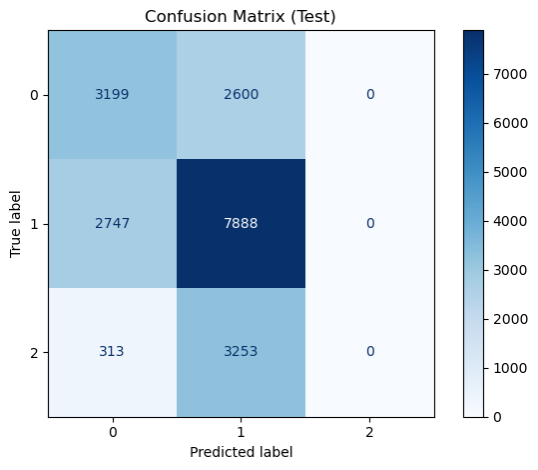
Para seleccionar las variables a utilizar en el modelo propuesto, se entrenó un modelo de XGBoost con los datos para extraer la importancia de las variables (feature importance), ya que este mostró el mejor rendimiento general para predecir el nivel de score crediticio en comparación con los demás modelos evaluados en el experimento realizado por Cao, He, Chen y Zhang (2018).
El dataset cuenta con más de 50 variables, por lo que se analizarán únicamente las 20 con mayor importancia, ya que el resto resultan insignificantes en comparación.
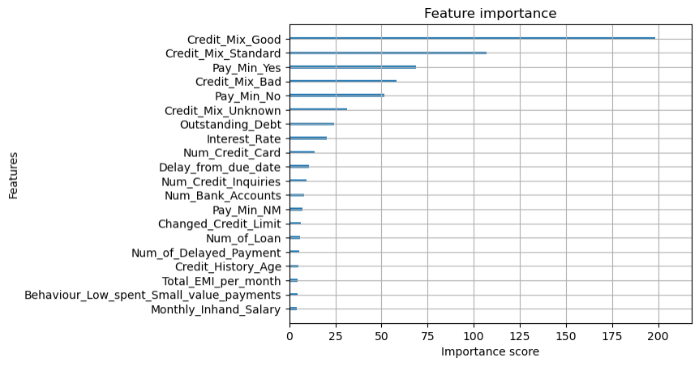
Para complementar el método de selección de variables obtenido mediante feature importances de XGBoost, se calculan los SHAP values de todas las variables utilizadas en el modelo. Los SHAP values son un método que ayuda a explicar las predicciones de los modelos de machine learning, los cuales indican cuánto aporta cada una de las variables a la predicción.
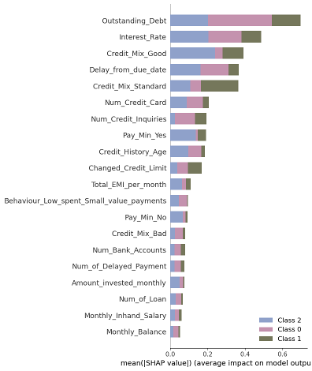
La imagen anterior muestra el impacto de cada una de las variables en la predicción del modelo, desagregado en las tres clases del Credit Score, lo que permite identificar de manera específica la contribución de cada variable en cada clase.
Los scorings reactivos tienen como principal objetivo evaluar la calidad crediticia de las solicitudes de crédito realizadas y tratan de predecir la morosidad de los solicitantes en caso de que la operación fuera concedida (BBVA, 2013). Es por esto que también se analizarán los SHAP values específicos de la clase de Poor Credit Score.
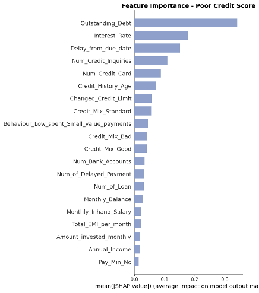
Como primer paso en la selección de variables, se estableció el siguiente criterio: si una variable aparecía en al menos dos de los tres análisis previamente presentados, superaba el filtro inicial.
Los 3 análisis considerados
Valores SHAP para las tres clases
Valores SHAP para la clase Poor Credit Score
Importancia de variables (feature importance)
Una vez filtradas las variables bajo el criterio de "dos de tres", estas se analizaron mediante gráficas de violín con el objetivo de visualizar de manera clara la distribución de cada variable en las distintas clases. Para ello, las variables numéricas se recortaron hasta el percentil 95, con el fin de reducir la influencia de valores atípicos en las visualizaciones.
En esta sección se seleccionan aquellas variables que presentan una separabilidad clara en sus distribuciones entre clases, con el propósito de aprovechar al máximo posibles relaciones lineales, dado que posteriormente se empleará un modelo clásico.
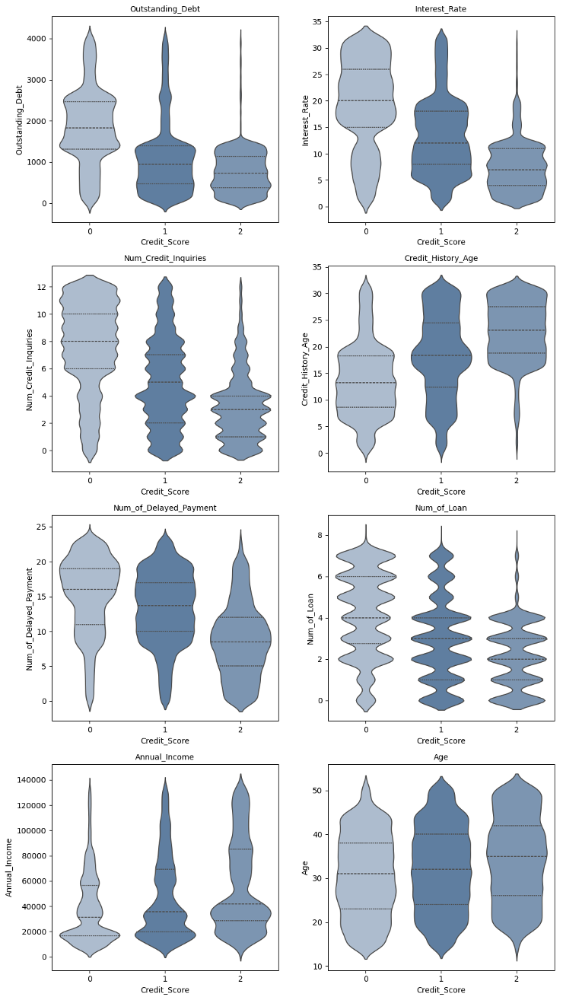
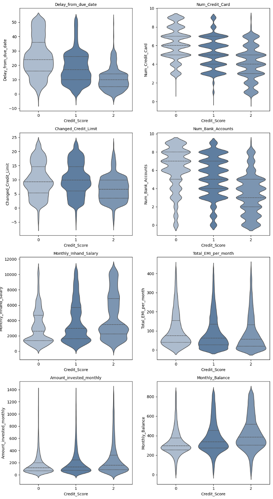
Por último, se realizó un análisis de correlación, a partir del cual se concluyó que, debido a la alta correlación entre las variables Monthly Inhand Salary y Monthly Balance, no era necesario mantener ambas en el modelo.
Variable eliminada
Monthly Balance
Presentaba menor importancia frente a Monthly Inhand Salary.
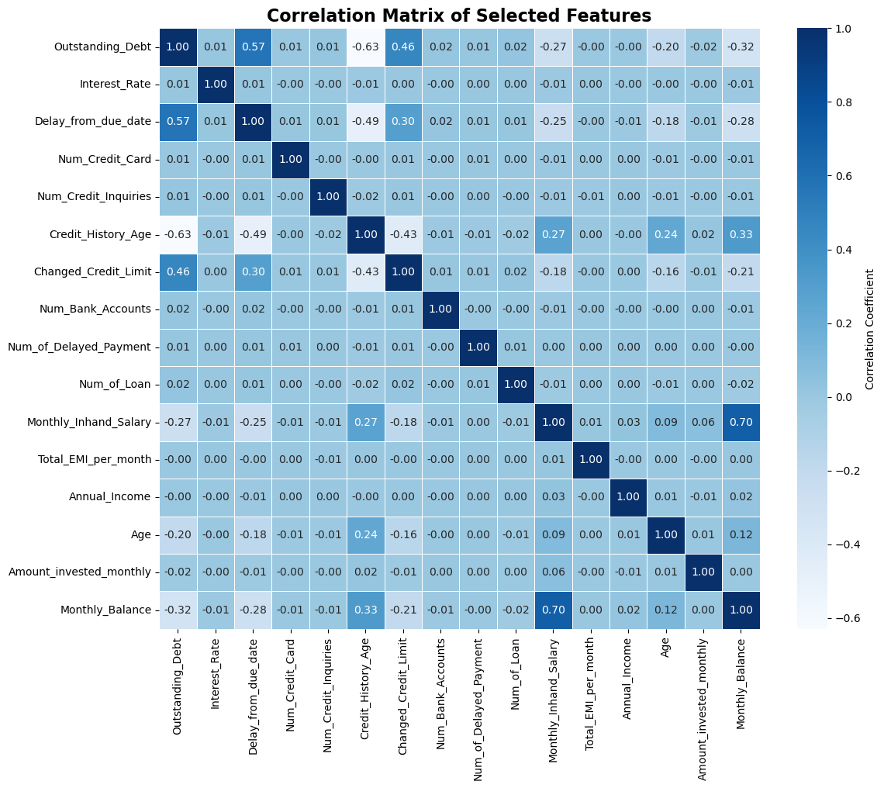
Fuerte relación para identificar personas con Credit Score malo.
Clara separación entre Credit Score bueno y malo.
Mientras menor sea la tasa, mejor el Credit Score.
Mientras menor sea el retraso, mejor el Credit Score.
Mientras menor sea el número de tarjetas, mejor el Credit Score.
A menor número de cuentas bancarias, mejor el Credit Score.
De las dummies mejor puntuadas en feature importances.
De las dummies mejor puntuadas en feature importances.
De las dummies mejor puntuadas en feature importances.
De las dummies mejor puntuadas en feature importances.
Las variables seleccionadas son consistentes con los determinantes tradicionales del riesgo crediticio en el ámbito de personas físicas, donde el objetivo principal es estimar la probabilidad de incumplimiento individual. De acuerdo con el Basel Committee on Banking Supervision (2006), la medición del riesgo de crédito se fundamenta en la estimación de la probabilidad de incumplimiento (PD), la cual depende de factores asociados a capacidad de pago, comportamiento histórico y exposición al crédito.
Justificación por variable
Outstanding_Debt representa el nivel de endeudamiento del individuo. En términos financieros, un mayor nivel de obligaciones reduce la capacidad de pago ante eventos adversos inesperados, incrementando la probabilidad de incumplimiento. Aunque el modelo estructural de Robert C. Merton (1974) fue desarrollado para deuda corporativa, el principio económico subyacente (mayor deuda implica mayor riesgo de default) es igualmente aplicable a individuos. Además, Interest_Rate impacta directamente sobre el servicio de la deuda; tasas más altas aumentan la carga financiera periódica y reducen el ingreso disponible, afectando negativamente la capacidad de pago (Basel Committee on Banking Supervision, 2006).
Las variables de comportamiento como Delay_from_due_date constituyen uno de los predictores más sólidos en modelos de credit scoring. La evidencia empírica muestra que la morosidad pasada es altamente informativa respecto al incumplimiento futuro debido a la persistencia en patrones financieros (David Hand & William E. Henley, 1997). De manera similar, Pay_Min_Yes / Pay_Min_No funciona como señal de liquidez: pagar únicamente el mínimo requerido suele asociarse con alta utilización del crédito y mayor vulnerabilidad ante deterioros en el ingreso disponible, fenómeno documentado ampliamente en la literatura de scoring para consumidores (Credit Scoring and Its Applications).
Las variables de exposición como Num_Credit_Card, Num_Credit_Inquiries y Num_Bank_Accounts capturan la intensidad de uso y búsqueda activa de crédito. Un mayor número de consultas recientes es interpretado en la industria como señal de mayor riesgo potencial, ya que puede reflejar necesidad de financiamiento (credit seeking behavior). Este tipo de variable forma parte de los componentes estándar en modelos desarrollados por la industria del scoring, como los utilizados por FICO. Asimismo, el número de líneas abiertas incrementa la exposición total al crédito y la probabilidad de un endeudamiento excesivo.
Credit_Mix_Good y Credit_Mix_Standard reflejan la composición del portafolio crediticio del individuo. En modelos de scoring para personas, la diversidad y manejo adecuado de distintos tipos de crédito (revolvente, a plazos, hipotecario) se considera señal de experiencia financiera y comportamiento responsable. La estructura del portafolio es un componente explícito en los modelos industriales de calificación crediticia (FICO), ya que aporta información adicional sobre estabilidad financiera y gestión del riesgo individual.
Los 4 pilares del riesgo crediticio
En conjunto, las variables seleccionadas capturan los cuatro pilares fundamentales del riesgo crediticio en personas, alineándose con la teoría financiera y con la práctica bancaria internacional.
XGBoost es uno de los modelos más eficaces para problemas de clasificación en calificación crediticia, debido a su alto poder predictivo y capacidad para capturar relaciones complejas entre variables. Por esta razón, se utilizó como referencia para determinar los pesos en la construcción del modelo de scoring clásico.
El feature importance de XGBoost cuantifica la contribución relativa de cada variable al desempeño del modelo. Cuando estos valores se normalizan, pueden interpretarse como la proporción del impacto que cada variable tiene en la predicción, lo que permite asignar pesos de manera directa y consistente. Además, estos valores mantienen una relación jerárquica entre sí, reflejando la importancia relativa de cada variable dentro del modelo.
En el diseño del score crediticio se estableció que la escala fuera intuitiva: a mayor puntaje, mejor calificación crediticia. Para garantizar esta coherencia, es fundamental analizar previamente el comportamiento y la dirección de las variables seleccionadas.
Signo negativo
Las 6 variables numéricas presentan relación negativa con la calidad crediticia — a mayor valor, mayor riesgo. Sus pesos se definen con signo negativo para que incrementos en estas variables reduzcan el puntaje final.
Signo positivo
Las variables binarias y categóricas con relación positiva contribuyen con signo positivo, asegurando que un mayor score refleje un mejor perfil crediticio.
Para definir la fórmula del score es necesario estandarizar previamente las variables incluidas en el modelo, de modo que todas se encuentren en una misma escala. Esto evita que diferencias en magnitud o unidades de medida distorsionen su contribución dentro del indicador.
Al trabajar con variables estandarizadas, los pesos (que representan la importancia relativa estimada por el modelo) mantienen coherencia económica y estadística, permitiendo que su interpretación como proporción de impacto sea consistente y que la lógica del score se preserve adecuadamente.
Score Base — Combinación lineal ponderada
El modelo final del score crediticio puede expresarse como una combinación lineal ponderada de las variables seleccionadas, incorporando signo negativo en aquellas que presentan una relación inversa con la calidad crediticia.
Scorebase =
0.032156
·
Outstanding_Debt
0.026707
·
Interest_Rate
0.014050
·
Delay_from_due_date
0.017951
·
Num_Credit_Card
0.012550
·
Num_Credit_Inquiries
0.010737
·
Num_Bank_Accounts
0.090979
·
Pay_Min_Yes
0.068036
·
Pay_Min_No
0.262000
·
Credit_Mix_Good
0.141270
·
Credit_Mix_Standard
Donde las primeras seis variables incorporan signo negativo debido a su relación adversa con la calidad crediticia, asegurando que un mayor valor en dichas variables reduzca el score final y, por tanto, refleje un mayor riesgo.
Normalización — Min-Max Scaling (0 a 500)
Para una mejor interpretabilidad el score se normaliza en un rango entre 0 y 500 con un min-max scaling.
Score = 500 · (Scorebase − Scoremin) / (Scoremax − Scoremin)
Score = 500 · (Scorebase − (−0.7899777)) / (0.4228750 − (−0.7899777))
Una vez construido el score continuo, es necesario transformarlo en una variable categórica que permita clasificar a los individuos en los tres niveles definidos. Para ello, se estiman dos puntos de corte t₁ y t₂:
En lugar de fijar estos umbrales de forma arbitraria, se plantea su determinación como un problema de optimización. El objetivo es encontrar los valores de t₁ y t₂ que maximicen la capacidad de clasificación del modelo, medida a través de la accuracy sobre el conjunto de evaluación. De esta manera, los puntos de corte se seleccionan de forma consistente con la estructura empírica de los datos y no mediante criterios subjetivos.
¿Qué es Optuna?
Optuna es un framework de optimización automática de hiperparámetros ampliamente utilizado en machine learning. Implementa métodos avanzados de búsqueda como TPE (Tree-structured Parzen Estimator), que modelan de manera probabilística el espacio de soluciones y permiten explorar eficientemente combinaciones de parámetros. A diferencia de una búsqueda exhaustiva (grid search), Optuna adapta dinámicamente la exploración con base en resultados previos, mejorando la eficiencia computacional y la probabilidad de encontrar soluciones óptimas.
En este contexto, los umbrales t₁ y t₂ se tratan como hiperparámetros enteros dentro del rango observado del score. En cada iteración, el algoritmo propone una combinación de valores, calcula la clasificación resultante y evalúa su precisión. Tras múltiples ensayos (trials), el estudio selecciona la combinación que maximiza la métrica objetivo. Este procedimiento garantiza que la segmentación final del score sea estadísticamente óptima respecto a la capacidad predictiva del modelo clásico.
Una vez implementado Optuna para optimizar los umbrales, se realizaron múltiples procesos de optimización con el objetivo de garantizar estabilidad y consistencia en los resultados. Los umbrales que mostraron el mejor desempeño fueron los siguientes:
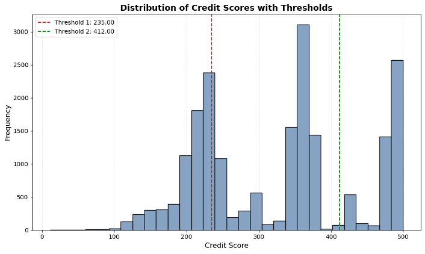
Las hipótesis concretas sobre las que se construye el modelo.
Se asume que el conjunto de datos constituye una muestra representativa de la población de personas que solicitan un crédito. Esto implica que la distribución de las variables incluidas refleja de manera adecuada el comportamiento de estas mismas variables en la población general.
Se considera que los datos provienen de registros confiables y los valores observados representan de forma fiel el estado real del historial crediticio de los individuos.
Se asume que las relaciones observadas entre las variables independientes y la variable dependiente se mantienen relativamente estables a lo largo del tiempo, lo que permite utilizarlas para fines de análisis y modelado predictivo.
El modelo se basa en el supuesto de que el comportamiento financiero pasado de los individuos es un indicador útil para estimar su comportamiento futuro en relación con el cumplimiento de sus obligaciones crediticias.
Variables relacionadas con el historial de pagos, nivel de endeudamiento y grado de utilización del crédito se consideran especialmente informativas.
Un historial de pagos puntuales y un manejo responsable del crédito pueden indicar un menor riesgo.
Se asume que los patrones observados en el comportamiento crediticio histórico contienen información que puede ser utilizada para identificar tendencias y relaciones relevantes entre las variables analizadas y el riesgo de incumplimiento.
Para utilizar el modelo de manera adecuada y obtener el score crediticio, se requiere que el conjunto de datos contenga uno de los dos siguientes sets de columnas:
Variables Originales
Variables Modificadas
Tipos de dato requeridos
Se asume que los datos contenidos en dichas variables se encuentran completos y en el formato correspondiente:
Estandarización — Medias y Desviaciones Estándar del Set de Entrenamiento
Para el uso del modelo se estandarizan las variables utilizadas. Se asume que las medias y desviaciones estándar del set de entrenamiento son lo suficientemente representativas para estandarizar cualquier set introducido al modelo.
Escalamiento del Score (0 a 500)
El modelo escala el score obtenido a un rango de 0 a 500 utilizando el score mínimo y máximo obtenidos en el conjunto de entrenamiento, asumiendo que estos valores son representativos y adecuados para realizar el escalamiento.
Desempeño del modelo sobre el conjunto de prueba.
El modelo clásico de scoring optimizado mediante la calibración de umbrales alcanza una accuracy global de 59% sobre el conjunto de prueba (20,000 observaciones). Considerando que se trata de un problema multiclase con tres categorías (Poor, Standard y Good), este desempeño indica que el modelo logra capturar patrones discriminantes relevantes, aunque con diferencias en desempeño entre clases.
El modelo muestra una capacidad moderada para identificar perfiles de mayor riesgo. Desde una perspectiva financiera, el recall en esta clase es especialmente importante, ya que indica que el 54% de los individuos con mayor probabilidad de incumplimiento son correctamente detectados.
Presenta la mayor precision (0.71), lo que indica que cuando el modelo asigna esta categoría, suele hacerlo correctamente. No obstante, su recall es de 0.60, lo que implica que una proporción relevante de individuos de riesgo medio es clasificada en otra categoría. Dado que es la clase con mayor soporte (10,635 observaciones), su desempeño tiene un impacto significativo en la accuracy global.
El modelo logra recuperar una proporción considerable de buenos pagadores, aunque con cierta confusión frente a clases adyacentes.
En conjunto, los resultados indican que el modelo posee capacidad discriminante razonable, especialmente en la clase predominante (Standard), aunque existe margen de mejora en la identificación precisa de perfiles extremos (Poor y Good).
Benchmark
55%
Regresión Logística
Modelo Final
59%
Scoring Optimizado
En términos globales, el modelo propuesto muestra una mejora en capacidad predictiva agregada. La principal diferencia se observa en la distribución del desempeño por clase.
La regresión logística presenta un recall muy alto en la clase Standard (0.74), lo que indica que tiende a concentrar sus predicciones en la categoría intermedia.
Sin embargo, esto ocurre a costa de una pérdida total de capacidad discriminante en la clase Good (2), donde tanto precision como recall son 0.00. Es decir, el modelo no logra identificar ningún individuo de bajo riesgo correctamente.
En la clase Poor (0), ambos modelos muestran desempeños similares (recall cercano a 0.55), aunque el modelo optimizado mantiene mayor equilibrio entre clases.
La regresión logística presenta un sesgo claro hacia la clase mayoritaria (Standard), sacrificando completamente la detección de la clase Good.
Benchmark vs Modelo de Scoring
Benchmark
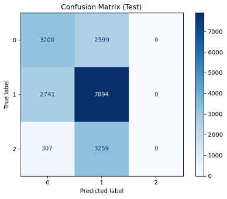
Modelo de Scoring
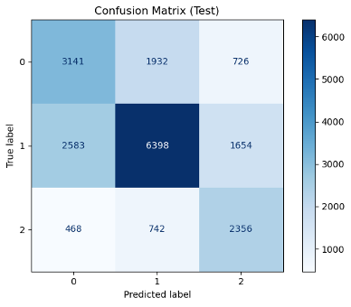
¿Dónde, cuánto y por qué se equivocó el modelo?
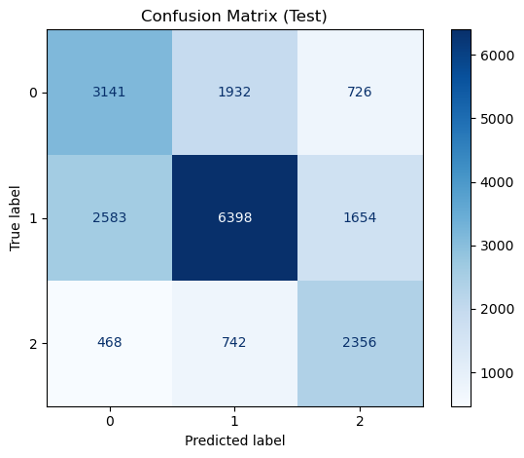
Errores principales
El error más frecuente en volumen absoluto. El modelo está clasificando clientes de calidad crediticia media como de alto riesgo, lo que implica rechazar solicitudes viables o cobrar tasas más altas de lo justificado. Impacto: pérdida de oportunidad de negocio y posible insatisfacción del cliente.
El error más crítico para el negocio. Son clientes de alto riesgo que el modelo clasifica como aceptables, lo que implica pérdidas directas por incumplimiento. Sin embargo, representa solo el 33.4% de los errores de Clase 0, mostrando que el modelo es relativamente efectivo en detectar riesgo alto.
Error poco frecuente pero muy perjudicial para la relación con el cliente, rechazando a buenos pagadores.
Orientación del modelo
El modelo parece estar calibrado para minimizar falsos positivos en la Clase 0, es decir, reducir la probabilidad de clasificar incorrectamente a clientes de alto riesgo como perfiles de bajo riesgo. Desde una perspectiva de gestión crediticia, esta orientación es estratégicamente adecuada, ya que los errores en esta dirección pueden generar pérdidas financieras directas al otorgar crédito a individuos con alta probabilidad de incumplimiento.
Este comportamiento es consistente con la estrategia de selección de variables, las cuales en parte fueron determinadas a partir del análisis de los SHAP values para la clase Poor, priorizando aquellas con mayor contribución en la identificación de perfiles de alto riesgo. De esta manera, la construcción del modelo no solo responde a criterios estadísticos, sino que también está alineada con el objetivo financiero de fortalecer la detección temprana de clientes con mayor probabilidad de impago.
El modelo sobrepredice esta clase: está siendo conservador, clasificando más clientes como de alto riesgo de lo que realmente son. Esto protege contra pérdidas pero reduce la cartera potencial.
El modelo subpredice la clase mayoritaria: está siendo "redistribuida" hacia los extremos. Clientes Standard están siendo reclasificados como Poor o Good, lo que sugiere que el modelo tiene dificultad para capturar el rango medio de riesgo crediticio.
El modelo sobrepredice buenos clientes. Si bien esto favorece la aprobación, debe validarse que estos clientes realmente tengan bajo riesgo de incumplimiento.
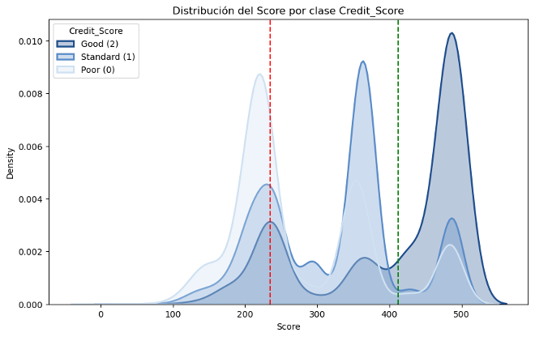
Poor (0) y Standard (1) tienen considerable solapamiento entre scores 200-300, explicando los 1,932 + 2,583 errores bidireccionales entre estas clases.
Standard (1) y Good (2) se solapan significativamente en 350-450, justificando los 1,654 errores de sobreestimación de Clase 2.
Poor (0) y Good (2) están relativamente bien separadas (picos en ~270 vs ~500), lo que explica los bajos errores directos entre estas clases (726 + 468).
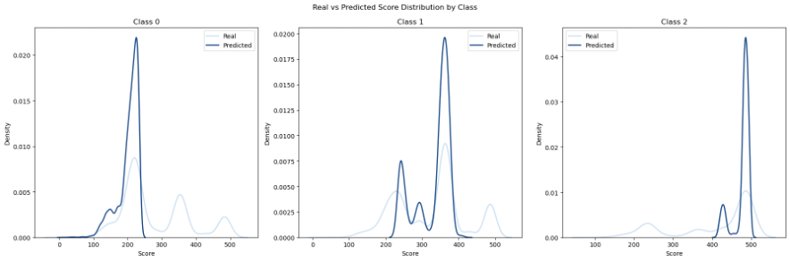
Clase 0 — Poor
Buena calibración. La distribución predicha replica casi perfectamente la distribución real, con pico en ~270. El modelo entiende bien qué caracteriza a un cliente de alto riesgo. Sin embargo, existen varios clientes de alto riesgo con un score muy alto que no logra identificar.
Clase 1 — Standard
Descalibración significativa. La distribución predicha muestra:
Un pico principal en ~380 (correcto).
Dos picos secundarios en ~240 y ~300 (clientes Standard confundidos con Poor).
La distribución real es más dispersa y multimodal, sugiriendo heterogeneidad dentro de esta clase que el modelo no captura completamente.
Clase 2 — Good
Buena calibración general, con pico bien definido en ~500. Sin embargo, la distribución predicha es más concentrada que la real, sugiriendo que el modelo es más "confiado" en sus predicciones de buenos clientes de lo que debería.
¿Qué se logró y qué implicaciones tiene esto en la vida real?
Modelo Final
59%
Accuracy
Benchmark
55%
Regresión Logística
Mejora
+4%
Sobre el benchmark
El modelo de Credit Score desarrollado tras el proceso de análisis alcanzó un accuracy del 59%. Esto indica que, aunque no se trata de un modelo con capacidad de predicción perfecta, sí posee cierta capacidad predictiva sobre el score crediticio. Además, el modelo supera el benchmark establecido, cuyo accuracy fue del 55%. Por lo tanto, el modelo propuesto muestra un mejor desempeño que el benchmark, así como que otros enfoques más simples, como un modelo aleatorio donde se asigne un score al azar.
Para la clase de 'Poor', el modelo clasifica correctamente 3,141 casos, aunque existe una cantidad relevante de observaciones que se confunden principalmente con la clase 'Standard' (1,932 casos) y en menor medida con la clase 'Good' (726 casos).
Aunque clasificar un score que realmente es 'Poor' como 'Standard' implica cierto riesgo, este es menor que el de clasificarlo como 'Good', ya que en ese caso se estaría sobreestimando significativamente la calidad crediticia del cliente. Dado que el modelo no comete este último error con gran frecuencia, se considera que el nivel de riesgo asociado a estas confusiones no es excesivamente elevado.
En la clase 'Standard', el modelo logra 6,398 clasificaciones correctas, siendo esta la clase con mejor desempeño. No obstante, también se observan errores hacia la clase 'Poor' (2,583 casos) y hacia la clase 'Good' (1,654 casos). El modelo, en el caso de esta clase, tiende a subestimar el score crediticio más que sobreestimarlo.
Para la clase 'Good', el modelo identifica correctamente 2,356 observaciones, aunque se presentan algunas confusiones con la clase 'Standard' (742 casos) y en menor medida con la clase 'Poor' (468 casos). En el caso de esta clase, la predicción resulta relativamente buena, ya que no son muchos los errores.
El modelo desarrollado es un modelo lineal, lo que implica ciertas limitaciones, ya que pueden existir relaciones no lineales entre las variables que el modelo no es capaz de capturar adecuadamente. Como consecuencia, esto puede afectar su capacidad predictiva y hacer que no prediga de la mejor manera posible. Si bien se utilizaron modelos de Machine Learning para la selección de variables, el modelo final sigue siendo lineal, por lo que mantiene las limitaciones a este tipo de modelos mencionadas anteriormente.
De acuerdo con el modelo desarrollado en este proyecto, a una persona que desee mejorar su score crediticio se le recomendaría lo siguiente:
En primer lugar, diversificar los tipos de crédito y préstamos que posee, ya que estas variables tienen un peso importante dentro del modelo.
Es fundamental realizar los pagos a tiempo y cubrir al menos el pago mínimo requerido en los distintos tipos de crédito.
El modelo muestra que a mayor nivel de deuda, menor es el score crediticio, por lo que se recomienda reducir y pagar las deudas existentes, así como utilizar el crédito de manera moderada y únicamente cuando sea realmente necesario.
También se sugiere no acumular un número excesivo de tarjetas de crédito, ya que este es otro factor que, según el modelo, puede afectar negativamente el score crediticio.
Factor externo
Existe un factor que influye en el modelo y que escapa al control directo de las personas: la tasa de interés, la cual, cuando es más alta, tiende a afectar negativamente el score. No obstante, seguir las recomendaciones anteriores puede ayudar a mejorar el perfil crediticio, lo que a su vez aumenta la probabilidad de acceder a tasas de interés más bajas en futuros instrumentos de deuda.
Los mayores retos, cómo los superamos y qué nos llevamos de esta experiencia.
El desarrollo de este proyecto representó una experiencia académica muy enriquecedora, ya que implicó enfrentar distintos retos técnicos, metodológicos y creativos. Uno de los primeros desafíos fue trabajar con una base de datos que presentaba inconsistencias, valores faltantes y formatos incorrectos, lo que requirió un proceso cuidadoso de limpieza y preparación antes de iniciar el modelado.
Asimismo, la selección de variables y la elección de los métodos adecuados para el modelo representaron una parte clave del proceso. Para ello se exploraron distintas herramientas y metodologías, como el uso de feature importance, valores SHAP y algoritmos como XGBoost, además de la aplicación de técnicas como la optimización bayesiana con Optuna para la selección de thresholds. Este proceso permitió integrar conocimientos de distintas materias, como estadística, machine learning y programación. También fue necesario realizar investigación teórica para contextualizar el riesgo de crédito, comprender los modelos de scoring crediticio y explicar las métricas utilizadas para evaluar el desempeño del modelo.
Finalmente, la libertad en el formato de entrega permitió presentar el proyecto de forma más creativa mediante una página web interactiva, lo que facilitó comunicar los resultados de manera más clara y visual.
En conjunto, el proyecto permitió combinar investigación, análisis de datos y desarrollo técnico, además de fomentar el trabajo en equipo y el aprendizaje autónomo, contribuyendo a comprender mejor cómo se construyen y evalúan modelos de scoring crediticio en la práctica.
Al realizar este proyecto y enfrentarme a diversos retos técnicos, tuve muchas oportunidades para aprender conceptos y herramientas nuevas. Algunos de los principales desafíos fueron la selección de variables y la elección del método más adecuado, y fue en este proceso donde aprendí sobre los SHAP values, una herramienta que no había visto en otras clases y que me pareció muy interesante y útil para interpretar modelos.
Otro de los retos importantes fue la selección de los thresholds para la clasificación del score. En esta etapa pude aplicar conocimientos que adquirí en otras materias, como la optimización bayesiana, la cual en este caso se implementó utilizando Optuna. Esta experiencia permitió integrar distintos conceptos aprendidos durante la carrera y aplicarlos de forma práctica en el desarrollo del modelo.
En general, este proyecto representó una muy buena oportunidad para poner a prueba distintos conocimientos y habilidades. No solo me permitió aplicar y consolidar mis conocimientos técnicos, sino también desarrollar habilidades de trabajo en equipo y de autoaprendizaje al enfrentar distintos retos a lo largo del proceso.
En este sentido, la experiencia me pareció muy valiosa, ya que combinó la aplicación práctica de herramientas con la necesidad de investigar, aprender nuevas metodologías y colaborar de manera efectiva para lograr los objetivos del proyecto.
Uno de los principales retos que tuve fue pensar en una forma creativa y única de presentar nuestro proyecto, ya que fui motivada por el punto extra para la mejor presentación. Quería que fuera algo interactivo y ordenado, por lo que se me ocurrió crear una página web utilizando mis conocimientos sobre html. Algo que me gustó sobre esto es que se nos da total libertad para el formato del documento, lo cual se me hizo padre por que pudimos presentar nuestro trabajo de una forma visualmente más atractiva que un documento escrito.
En cuánto a la investigación, uno de los principales retos fue encontrar información que pudiera sustentar la forma en la que decidimos desarrollar el modelo. Además, el pensar en que información sería necesaria para poder dar un contexto completo de lo que es el otorgamiento de crédito, los tipos de riesgo que conlleva, los distintos modelos de scoring crediticio que existen, enfocándonos en el de FICO, y los factores que influyen en la calificación de los clientes y los rangos que se consideran. También se investigó sobre las métricas de evaluación que se utilizaron para poder dar una explicación detallada sobre como funcionan y para que se pueden utilizar. Por último, investigar para poder explicar como es que se pudó aplicar Machine Learning en la elección de variables y el por qué funciona.
Otro reto fue encontrar buenas formas de elegir las variables finales para el modelo y el hacer distintas pruebas para ver si se podía llegar a un mejor resultado en cuanto al accuracy del modelo final. Para esto realizamos investigaciones sobre las variables, observamos gráficas sobre la relación, distribución y separabilidad de estas, y utilizamos el feature importance para elegir las que son más relevantes para el modelo.
En general, me gustó mucho la libertad que se dió en cuanto a la realización del proyecto, la forma en la que se nos permitió combinar investigación teórica con análisis de datos y entender mejor cómo se construye y se evalúa un modelo de scoring crediticio en la práctica.
Uno de los principales retos fue trabajar con una base de datos con múltiples inconsistencias: formatos erróneos, valores nulos y registros incompletos, situación poco común en proyectos previos. El proceso de limpieza de datos requirió de tiempo y mucha atención al detalle para llegar a una base de datos limpia y utilizable.
Además, la selección de variables relevantes para el modelo fue una tarea compleja debido a la gran cantidad de técnicas disponibles. Fue necesario contrastar diferentes metodologías como el análisis de valores SHAP y las métricas de importancia del algoritmo XGBoost para fundamentar adecuadamente la inclusión o exclusión de predictores en el modelo final.
Un punto positivo del proyecto, que a su vez representó un reto, es la libertad en el desarrollo de este. Esto se debe a la posibilidad de aplicar conocimientos de muchas materias ya vistas como machine learning, programación y estadística, además de realizar investigaciones para fundamentar conceptos económicos y financieros.
En general el proyecto fue una experiencia muy satisfactoria con retos únicos en comparación a otras materias, ya que nos permitió utilizar y aplicar mucho de lo aprendido previamente con libertad y criterio propio.
Bibliografía y fuentes utilizadas para el desarrollo del modelo.
Team, A., Team, A., & Team, A. (2024, November 20). Fundamentals of credit risk. CFA, FRM, and Actuarial Exams Study Notes. https://analystprep.com/...
Metodologías de cuantificación del riesgo de crédito. (n.d.). BBVA Financial Report 2010. https://shareholdersandinvestors.bbva.com/...
Risk in banking - English open captions. (n.d.). [Video]. SAS. https://www.sas.com/...
Tiffanycaballero. (n.d.). Los indicadores esenciales de riesgo de crédito: guía para su identificación y gestión. Equality Company. https://www.equality.company/...
Peterdy, K. (2022, June 11). Credit risk. Corporate Finance Institute. https://corporatefinanceinstitute.com/...
Team, I. (2025, October 29). Credit scoring: Purpose, factors, and role in lending. Investopedia. https://www.investopedia.com/...
SA, C. (2024, February 8). What is credit scoring? About types, model and method. Comarch S.A. https://www.comarch.com/...
Clasificación: Exactitud, recuperación, precisión y métricas relacionadas. (n.d.). Google for Developers. https://developers.google.com/...
Sandhu, D. R. (2021, November 5). Class imbalance vs accuracy. Medium. https://medium.com/...
GeeksforGeeks. (2025, October 29). Evaluation metrics in machine learning. GeeksforGeeks. https://www.geeksforgeeks.org/...
Kaur, T. (2025, February 19). KNN Imputation: The Complete Guide. Medium. https://medium.com/...
World Bank Group. (2019). Credit scoring approaches guidelines. The World Bank Group. https://thedocs.worldbank.org/...
Bozagiu, A.-M., Mihai, G.-D., Neacșu, A. C., & Neacșu, G. A. (2025). A comparative analysis of credit scoring models and generative AI techniques. Proceedings of the 19th International Conference on Business Excellence, 19, 1235–1247. https://doi.org/10.2478/picbe-2025-0098
Cao, A., He, H., Chen, Z., & Zhang, W. (2018). Performance evaluation of machine learning approaches for credit scoring. International Journal of Economics, Finance and Management Sciences, 6(6), 255–260. https://doi.org/10.11648/j.ijefm.20180606.12
Banco Bilbao Vizcaya Argentaria. (2013). Probabilidad de incumplimiento (PD). https://accionistaseinversores.bbva.com/...
Team, O. (2022, April 15). OPTUNA: an Automatic Hyperparameter Optimization Framework. Open Data Science Conference. https://odsc.com/...
Basel Committee on Banking Supervision. (2006). International convergence of capital measurement and capital standards: A revised framework (Comprehensive version). Bank for International Settlements.
Merton, R. C. (1974). On the pricing of corporate debt: The risk structure of interest rates. The Journal of Finance, 29(2), 449–470. https://doi.org/10.1111/j.1540-6261.1974.tb03058.x
Thomas, L. C., Crook, J. N., & Edelman, D. B. (2002). Credit scoring and its applications. Society for Industrial and Applied Mathematics.
FICO. (n.d.). What's in my FICO® scores? Fair Isaac Corporation. https://www.myfico.com/...
Hand, D. J., & Henley, W. E. (1997). Statistical classification methods in consumer credit scoring: A review. Journal of the Royal Statistical Society: Series A, 160(3), 523–541. https://www.jstor.org/stable/2983268
Hastie, T., Tibshirani, R., & Friedman, J. (2009). The elements of statistical learning: Data mining, inference, and prediction (2nd ed.). Springer.
Chen, T., & Guestrin, C. (2016). XGBoost: A scalable tree boosting system. Proceedings of the 22nd ACM SIGKDD International Conference on Knowledge Discovery and Data Mining, 785–794. https://doi.org/10.1145/2939672.2939785
Siddiqi, N. (2012). Credit risk scorecards: Developing and implementing intelligent credit scoring. John Wiley & Sons.
Breiman, L. (2001). Statistical modeling: The two cultures. Statistical Science, 16(3), 199–231. https://doi.org/10.1214/ss/1009213726
Código fuente, dataset y referencias bibliográficas del proyecto.